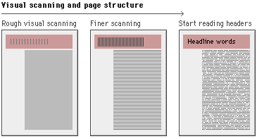
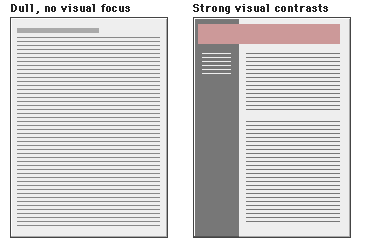
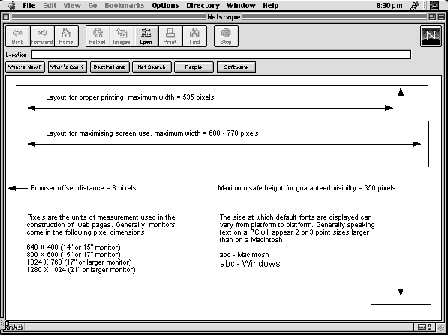
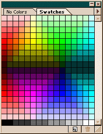
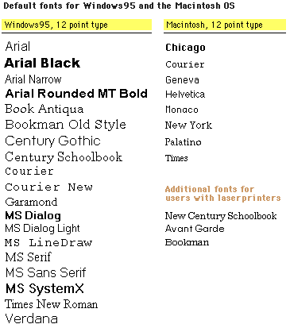

Graphic Design
Jonathan Fox
Graphic Design
Designing for the Web combines use of:
- Layout
- Colour
- Typography
- Iconography
Layout
Users of a page will first see colour and shape. They will then begin to pick out specific information.

Layout
A page full of solid text will be difficult to scan. Good use of colour, type and graphics will help users find what they are looking for.

Layout Considerations
In the West readers scan a page from top left to right and down. This dominates the design of most Web pages. The top of the page is the dominant location.
Also important in Web design because the top of the page loads first. The left side of the page is the safest area of the page for navigation buttons/toolbars because it is not affected by monitor size.
Consistency
Once you have decided on a layout grid for your pages, stick with it. Repetition of a basic format will make users feel 'at home'. They will quickly learn where to find particular elements in your pages and it will be easier to navigate through the site.

Page Size
When you come to design a layout and produce a prototype layout for your page you will need to think about page size. Users may look at your site on a laptop with a screen resolution of 640x480 or on an office desktop machine with a resolution of 1024x768. How big do you make your page?
Page Size

Web Colour
Most people who use the Web are assumed to have at least a 256-colour monitor. Taking into account the slight difference between the two main browsers (IE and Netscape) and platforms (PC and Macintosh) there are 216, so called, Web-safe colours.

HEX Colour Values
Web colours are described using 3 sets of hexadecimal numbers (base 16), one each for red, green and blue, as a maximum 255 value for red, green and blue and as percentage value of red, green and blue.
#ff0000
rgb(255,0,0)
rgb(100%,0%,0%)
red
Web Typography
The number of typefaces available to Web designers is limited to the default fonts loaded onto PCs and Macs.
Arial for the PC and Helvetica for the Macintosh are probably the most widely used sans serif fonts in Web design, Times and Times New Roman the most common serif fonts.
Web Typography

Text as Image
One way to overcome the limitations of text formatting in HTML is to create text as a graphic. You are then able to use a dedicated design application (Photoshop, Freehand or Illustrator) to format the text in exactly the way you want and then convert the image to a Web format (normally GIF). When creating text graphics remember to anti-alias your text.
However relying heavily on graphic-based text will make your pages slow to load.
Text as Image


Aliasing vs Anti-Aliasing
Anti-aliasing allows you to produce smooh text by partially filling the edges of characters with extra pixels. As a result the type blends into the background. Anti-aliasing increases the number of colours in an image so anti-aliased text images files are larger.
Aliasing vs Anti-Aliasing
Iconography
Icons can be used in Web pages in two ways:
- They can reinforce written information
- They can convey instructions on using a page (interface design)
Iconography
It is possible to create your own icons using a graphics application (e.g. Photoshop, Illustrator, Freehand, Paint Shop Pro) but you can also use one of the Symbol fonts to create a text image. Both PCs and Macs have the Symbol and Webdings fonts loaded by default.